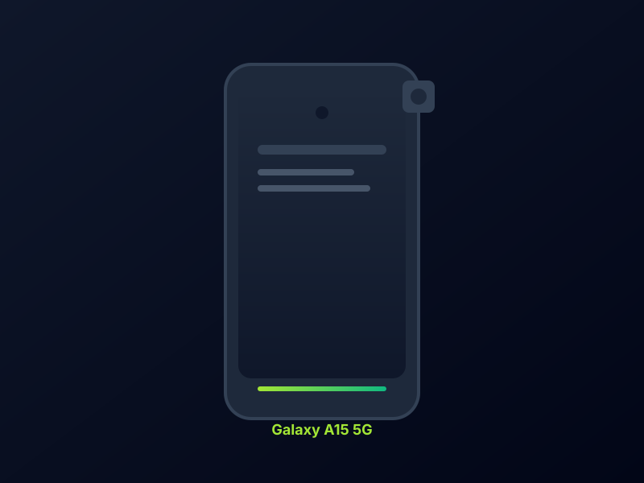

Samsung Galaxy A15 5G Review: Bright AMOLED and Real 5G Under $150
The unlocked Galaxy A15 5G brings a vibrant 90Hz Super AMOLED screen, dependable battery life, and Samsung software support to a price that stays under $150.
Budget phones often force a choice between a decent screen and features you will actually use. The Samsung Galaxy A15 5G, commonly found unlocked around $120 to $149, refuses that compromise. It is a current Samsung model with real 5G, a bright display, and software support that outlasts many no-name alternatives.
The 6.5-inch Super AMOLED panel is the standout. Full HD+ resolution at 90Hz with roughly 800 nits peak brightness keeps scrolling and video looking crisp and punchy. Colors are rich indoors, and outdoor readability is better than older LCD budget phones. A side-mounted fingerprint reader keeps unlocking simple and reliable for daily use.
Battery life holds up well for the class. The 5,000mAh cell with 25W wired charging handles a full day of messaging, social apps, and light streaming without stress. Many users stretch into a second morning on lighter days. 5G connectivity on the Dimensity 6100+ chipset is steady for everyday tasks, though performance stays in practical daily-driver territory rather than high-end multitasking.
Cameras are competent for the price. The 50MP main sensor captures solid daylight and social photos, while the 5MP ultrawide and 2MP macro are useful extras rather than standouts. The 13MP front camera works well for video calls and quick selfies. Storage starts at 64GB or 128GB with microSD expansion, which remains a practical advantage.
Software is a clear strength. Running Android 14 with One UI, the A15 5G receives multiple years of updates and security patches. That longevity, combined with the bright screen, solid battery, and 5G, makes it one of the more balanced options under $150 for buyers who want a reliable Samsung daily driver without premium pricing.
Key Takeaways
- Price Range: ~$120 – $149 (Amazon Unlocked)
- Display: 6.5-inch Super AMOLED, 90Hz, Full HD+
- Battery: 5,000mAh with 25W wired charging
- Cameras & Support: 50MP main, 5G, multi-year Android updates